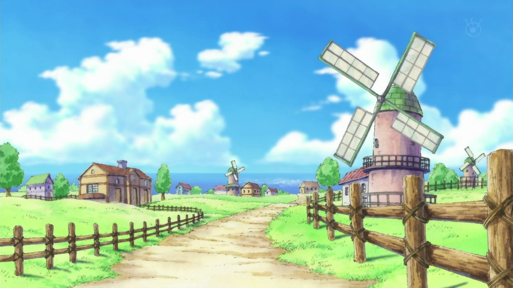
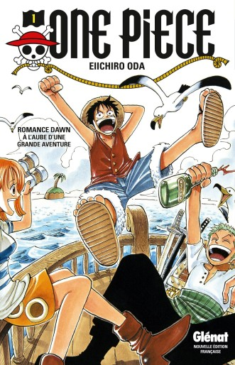
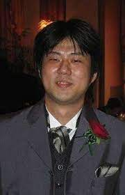
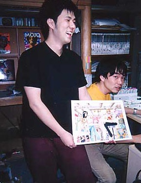
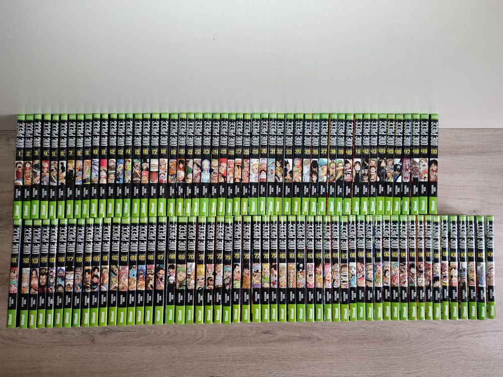

One Piece raconte l’histoire d’un garçon au chapeau de paille et de son rêve de devenir le roi des pirates. Le manga/animé retrace l’aventure de ce fameux garçon nommé Monkey D. Luffy, accompagné de ses compagnons qu’il a recruté sur son chemin. Pour réaliser son rêve, il doit tout simplement trouver le One Piece que l’ancien roi des pirates a laissé quelque part dans ce monde. Cependant, cette tâche s’annonce plus difficile que prévu car personne ne sait à quoi ce trésor ressemble ni où il est caché. Luffy et ses compagnons devront faire face à plusieurs obstacles, parmi d’autres pirates, la Marine, des monstres marins, etc. Malgré ce chemin semé d’embuches, Luffy ne perd pas de vu son rêve et compte bien le réaliser coûte que coûte.
 Eiichiro Oda est un mangaka japonais qui travaille nuit et jour pour sortir un chapitre par semaine de son manga One Piece, aussi interprété en animé. Ce mangaka de 48 ans a écrit le manga le plus vendu au début du XXIe siècle au Japon et dans le reste du monde. Il a également sorti 15 films en rapport avec l’animé, qui, certains sont en lien avec l’histoire principale, et d’autres sont hors chronologie. Eiichiro Oda a affirmé dans un SBS, qu’il ne s’occupe pas de tous les éléments du manga. Il s’occupe des croquis, des personnages et débute les décors. Et laisse ses assistants s’occuper d’élaborer les décors, ainsi que l’encrage et le tramage.
  